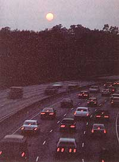
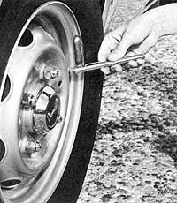

COUNTRY VEHICLES
No-cost ways to save money and gasoline
We thought it would be timely to update the energy-saving tips from the gas crunch of the 1970s. Of course, many of these are simply timeless, commonsense approaches to fuel efficiency.
The automobiles of the 1980s and '90s get better gas mileage and produce fewer toxic emissions than their predecessors did. This is due mostly to the federal Corporate Average Fuel Economy (CAFE gas mileage standards, which require that each carmaker's overall mileage reach a certain level (currently 27.5 miles per gallon. Car manufacturers have met these standards by producing smaller, lighter automobiles and by switching to computer-controlled carburetors and fuel injection.
I still hear tumors of people working on carburetors that will make a 15-mpg car get 30 or 40 mpg. These rumors have been around for So years, and they are just a dream. You can take any carburetor and modify each circuit until it runs very lean (that is, uses less gasoline), and it might double the gas mileage-but the car will have very little power, it won't start on cold mornings and it may not run at all in high altitudes. It will burn the valves, run hot and cold, maybe even burn holes in the pistons. You cannot beat computerized fuel injection, which reads the exhaust gas and changes the injection to keep the mixture just right-many times each second.
Nowadays, a good way to get better mileage is simply to buy a newer car. Some subcompacts are getting more than So mpg on the highway and 40 mpg around the city. Even large cars with zoo-HP engines are getting 26 mpg on the highway at 70 mph, using tuned-port fuel injection. That's pretty good for a two-ton vehicle.
Hundreds of gas-mileage gadgets have been made and sold, and hundreds more will no doubt crop up over the next few months. Some of them actually improved mileage on older cars by making the mixture leaner, but newer computer-controlled cars are already as lean as the engine will run. If the gadgets that get so much publicity actually worked, car manufacturers would install them-because they're under pressure to keep their mileage up.
Here are to "no cost" ways to save money on gasoline. Before you can measure their effectiveness, test what kind of mileage your car gets in normal driving situations over a period of several weeks.
1. USE THE LOWEST-OCTANE unleaded gasoline. Most cars do not need high-octane gas; only a few high-performance vehicles require it to run properly. Octane does not increase power or improve gas mileage; it stops pre-ignition, detonation or, as we say, pinging. This high-pitched knocking sound occurs under hard acceleration, or on hot days or when the timing is set too far advanced. Do not let your automobile's engine continue to ping loudly; use high-octane fuel until you or a mechanic can uncover the reason for the pinging or if recommended by the manufacturer.
2. THERE'S NOTHING WRONG WITH USING inexpensive gas, especially if it is a recognized national brand. The problem I sec with using independent brands is that their service stations may not clean the dirt and water out of the gas tanks as regularly as the bib companies do. You should always be sure the gas you're using has a detergent additive.
3. USE THE GRADE OF OIL recommended by your automobile's manufacturer. ~ I prefer 10-30 weight because it's thinner and will move through the engine more easily without causing quite as much drag. Be sure to use a name-brand oil rated and labeled "energy conserving" or "fuel saving."
4. PUMP UP POUR TIRES to the maximum car manufacturer-recommended pressure (usually 35 pounds of air pressure. Some people go even higher (40-50 pounds so the car has less rolling resistance. Remember: Pumping up the tires too high results in a rougher ride and less cornering ability.
5. DON'T IDLE. After starring your car, don't wait for it to warm up before driving away. Once you have oil pressure in the engine, take off. The engine warms up faster, uses less fuel and wears less. Likewise, don't let your car sit for more than 6o seconds without turning off the engine. You use less gas restarting your car than when letting it idle.
6. RATION FOUR DRIVING TIME. Do two or more errands in one trip. Avoid the times of day when traffic is heaviest. Find alternate routes to avoid stop-and-go traffic. Carpool when you can. For short trips, consider walking or bicycling, and when possible use public transportation. And, to carry your planning to the extreme, pull through a parking space whenever possible so you don't have to back up when you leave!
7. ACCELERATE BRISKLY to 30 mph and then apply steady pressure, as though you have an egg between your foot and the gas pedal. Cars get poor mileage below 30 mph, so get the car in the highest gear it can handle as soon as you can. Don't "put the pedal to the metal," though, since this uses extra gasoline by racing the engine.
8. HOLD n CONSTANT SPEED whenever possible. Keep your eve on the traffic ahead; if it stops or the light turns red, let up on the gas, coast and blend into traffic as it starts to move again.
9. TRY TO UTILIZE THE CAR'S ventilation system or open a window rather than using the air-conditioner. But, when you're driving at highway speeds, don't roll your windows down more than a couple of inches; it can increase your automobile's aerodynamic drag.
10. SET THE TOE-IN on your automobile's front tires according to the manufacturer's recommendations (or as close as you can get to reduce the rolling resistance. Front tires normally toe-in from 1/8 to 1/16 of an inch, to keep the car from wandering on the road. Also, as front suspension wears, it tends to toeout a bit. So most cars are set slightly toed in.
Samuel B. Wells is the author of Don't Get Ripped Off! How to Make Your Auto Mechanic an Honest Man, available for $19.95 plus $3 postage and handling from the author, 3118 Vallejo, Anaheim, CA 92804.
|
 |
 |
|